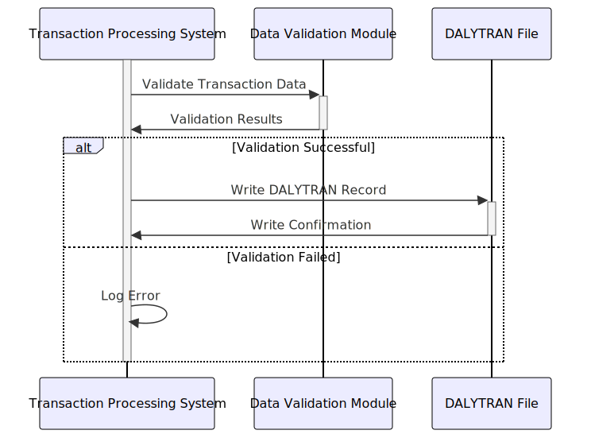

Gerado em: 1º de outubro de 2024
Título do Documento: Especificação da Estrutura de Dados do Registro de Transação de Cartão
Descrição Resumida:
Este documento descreve a estrutura e os elementos de dados do Registro de Transações Diárias (DALYTRAN-RECORD) dentro do Aplicativo CardDemo. Ele serve como uma especificação técnica para desenvolvedores e analistas entenderem o layout e a finalidade de cada campo no registro.
Histórias do Usuário: Como analista de dados, preciso de um formato padronizado para registrar as transações diárias de cartão de crédito para que eu possa realizar análises sobre padrões de gastos, rastrear a atividade do comerciante e gerar relatórios.
Épico Relacionado: 4 - Processamento de Transações
Requisitos Técnicos:
DALYTRAN-RECORD é definida usando construções da linguagem COBOL.DALYTRAN-ID: Um identificador único para cada transação. Este campo é crucial para rastrear transações individuais e garantir a integridade dos dados. Pode ser uma combinação de data, hora e um número sequencial.DALYTRAN-TYPE-CD: Um código que classifica o tipo de transação. Este código deve aderir a uma lista predefinida de tipos de transação, como ‘PUR’ para compra, ‘REF’ para reembolso, ‘CSH’ para saque em dinheiro, etc.DALYTRAN-CAT-CD: Um código que categoriza a transação com base no tipo de bens ou serviços adquiridos. Este código também deve aderir a uma lista predefinida de categorias, como ‘GROC’ para mantimentos, ‘FUEL’ para combustível, ‘REST’ para restaurante, etc.DALYTRAN-SOURCE: Indica a origem da transação, como ‘ONLINE’, ‘POS’ (Ponto de Venda) ou ‘ATM’.DALYTRAN-DESC: Uma breve descrição da transação. Este campo pode conter informações adicionais sobre a transação, como o produto ou serviço específico adquirido.DALYTRAN-AMT: O valor da transação, armazenado como um valor numérico com duas casas decimais.DALYTRAN-MERCHANT-ID: Um identificador único para o comerciante associado à transação. Este campo vincularia a transação a um banco de dados ou arquivo de comerciante separado.DALYTRAN-MERCHANT-NAME: O nome do comerciante.DALYTRAN-MERCHANT-CITY: A cidade do comerciante.DALYTRAN-MERCHANT-ZIP: O CEP do comerciante.DALYTRAN-CARD-NUM: O número do cartão de crédito usado para a transação. Este campo requer criptografia tanto no armazenamento quanto durante a transmissão para garantir a segurança dos dados.DALYTRAN-ORIG-TS: Um registro de data e hora indicando quando a transação foi iniciada. Este registro de data e hora ajuda a rastrear o ciclo de vida da transação e identificar possíveis problemas.DALYTRAN-PROC-TS: Um registro de data e hora indicando quando a transação foi processada. A diferença entre DALYTRAN-ORIG-TS e DALYTRAN-PROC-TS pode ser usada para analisar os tempos de processamento da transação.DALYTRAN-TYPE-CD e DALYTRAN-CAT-CD devem ser validados em relação a listas predefinidas de códigos válidos.DALYTRAN-AMT deve ser validado como um valor numérico positivo para compras e um valor negativo para reembolsos.DALYTRAN-CARD-NUM pode ser validado usando um algoritmo de checksum (como o algoritmo de Luhn).DALYTRAN-MERCHANT-ID, devem ser implementadas para evitar inconsistências de dados.DALYTRAN-CARD-NUM, devem ser criptografadas durante a transmissão e armazenamento para proteção contra acesso não autorizado.Modelos Relacionados
DALYTRAN-RECORD: Representa um único registro de transação diária.
DALYTRAN-ID String: Identificador exclusivo da transação.DALYTRAN-TYPE-CD String: Código do tipo de transação (por exemplo, ‘PUR’, ‘REF’).DALYTRAN-CAT-CD String: Código da categoria de transação (por exemplo, ‘GROC’, ‘FUEL’).DALYTRAN-SOURCE String: Origem da transação (por exemplo, ‘ONLINE’, ‘POS’, ‘ATM’).DALYTRAN-DESC String: Descrição da transação.DALYTRAN-AMT Decimal: Valor da transação.DALYTRAN-MERCHANT-ID String: Identificador do comerciante.DALYTRAN-MERCHANT-NAME String: Nome do comerciante.DALYTRAN-MERCHANT-CITY String: Cidade do comerciante.DALYTRAN-MERCHANT-ZIP String: CEP do comerciante.DALYTRAN-CARD-NUM String: Número do cartão de crédito criptografado.DALYTRAN-ORIG-TS Timestamp: Registro de data e hora de início da transação.DALYTRAN-PROC-TS Timestamp: Registro de data e hora de processamento da transação.Configurações:
TRAN-TYPES.cfgCódigo|Descrição (por exemplo, PUR|Compra, REF|Reembolso, CSH|Saque em Dinheiro)TRAN-CATS.cfgCódigo|Descrição (por exemplo, GROC|Mercearia, FUEL|Combustível, REST|Restaurante)DALYTRAN-CARD-NUM)Melhorias de Código:
Melhorias de Segurança:
DALYTRAN-RECORD com base em funções e permissões do usuário.Diagrama Conceitual:
–Made by “Smart Engineering” (by Compass.UOL)–